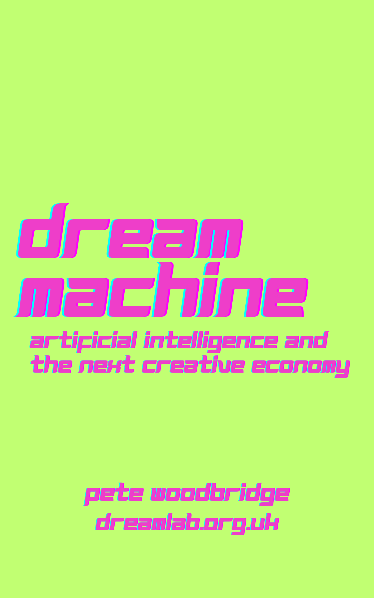

A practitioner's account of the year generative AI re-platformed the creative industries — written from inside the work, week by week, between October 2025 and August 2026.

What this book is
Not the internet of 1995 or the mobile phone of 2007 — faster, deeper, more thorough. The How of professional creative work is becoming a utility. When the How becomes a utility, the Why — taste, intent, authenticity — is the only thing left with commercial leverage.
The choices being made right now, by studios, unions, governments, toolmakers, and individual creatives at their kitchen tables, will set the terms for the next decade. This book is here to help you make those choices on better information than you would otherwise have.
Who it's for
The book has a Reader Paths guide with seven routes through the material depending on who you are.
Writers, directors, songwriters, games designers, photographers, illustrators, editors, producers, agency creatives, indie filmmakers, students and senior practitioners trying to figure out what creative life looks like in 2026 and beyond. The book gives you frameworks for making decisions under uncertainty, not a tools guide you'll need to throw away in three months.
Executives at studios, agencies, labels and production companies making organisational decisions about AI integration in a year when the cost of getting it wrong is the next decade of cultural authority. Chapter 7 maps the five strategic positions; Chapter 8 shows what the capital markets have done to them; Chapter 14 explains why so many organisations are discovering their AI strategy and their structure are fighting each other.
The people deciding the rails the next decade of creative work will run on. The 88% turned up to the UK copyright consultation. The Cannes Disclosure Standard, the Academy rule, the SAG-AFTRA contract — these are the decisions the book is here to inform, anchored in the evidence from Chapter 6 through Chapter 16.
Creative AI Book — Chapter Guide
Foreword, eighteen chapters, an Epilogue, and four appendices. Read straight through or pick a reader path.
The book's origin: the Tilly Norwood week, Sora 2, and the sentence that started it all — "It's time to take AI seriously." Who is writing, and why.
A synthetic actress on the Zurich Film Festival stage and a new AI video model in the same week. The unions respond. The before-and-after that organises everything that follows.
Photography, cinema, recorded sound, digital audio, CGI: the same argument has been made every generation and lost every time. The 1839–2025 pattern — and why this time is genuinely different in two important ways.
The book's foundational practitioner framework: a spectrum from full automation to full human control with eight named positions. Why staying on the high-agency end is a strategic choice, not just an ethical one.
Synthetic content is flooding every platform simultaneously. The C2PA provenance stack, the disclosure debate, and why the answer to "what's real?" matters more for creative economics than for AI ethics.
The audience has started voting. Undifferentiated AI output is hitting a ceiling defined by human attention and taste. The Authenticity Premium: why the market is moving toward work that can prove a human had a reason to make it.
11,500 responses to the UK copyright consultation. 88% demanded licensing in every case. The political watershed. The Petrillo-template levy mechanism: what the musicians' union achieved in 1942 and why it's the closest precedent for what the creative industries need now.
Five strategic positions: Replace, Augment, Automate, Hold, and Own the Rails. The trap legacy industries built for themselves. Hasbro's Sixth Wall, the CharacterOS governance layer, and the corrected record on the Disney–OpenAI deal that never executed.
AI is getting funded; the work is not. The Seven-Year Problem, the duration discount, and four sector verdicts read from the allocation data — ending with the immersive inversion, where the discount changes sign.
The spatial turn. World Labs' Marble and the shift from flat video to 3D-navigable environments as the default creative medium. What it means for storytelling, production, and the creative roles that video has sustained for a century.
The platform layer. Adobe's "AI in everything, everywhere, all at once." The economics of platform concentration: why the toolchain is collapsing into a small number of integrated suites and what that means for independent makers.
Six categories of creative work that were not economically viable before 2024 and are now. The finite-attention ceiling: why new supply cannot simply create new demand, and what this implies for studios betting on volume.
The working creative's new role: directing AI systems rather than executing technical steps. The Year of the Orchestrator — why it requires the same skills creative direction has always required, plus a new literacy layer.
The provenance economy. How scarcity migrates from execution (which AI has commoditised) to intent (which it cannot). The Cannes Disclosure Standard, the Academy rule, the SAG-AFTRA contract as the institutional architecture of what comes next.
What happens when AI adoption outpaces organisational structure. Shadow AI: the gap between what organisations officially permit and what employees are actually doing. The Consumption Gap. What organisations should do — and what most are doing instead.
Labour-market restructuring argued from the data, not the doomer or booster script. The AI Literacy Premium. The Apprenticeship Gap: how the junior entry routes that have always trained the next generation are closing before replacements are open.
The four principles: Agency, Attribution, Access, Audience. The assistive-amplifier conviction. The Age of the Why. The chess-grandmaster frame: what happens to the grandmaster when Deep Blue wins — and why it's the spine of the book's strategic argument.
A complete, categorised inventory of 660+ tools, platforms and models from October 2025 – August 2026. Organised by creative discipline and workflow stage. The most comprehensive single catalogue of the period's toolchain.
Browse the creative toolkit →
A speculative five-year future-cast argued directly from the book's frameworks. Not prediction for its own sake — a test of whether the analytical frames hold up when pushed into the future.
The book closes where it started: a practitioner speaking plainly to the people who will inherit the creative economy the choices of 2025–26 are building right now.
Go deeper
Extended evidence, data, and long-form analysis behind the book's core arguments.
Get it
The print edition is available now on Amazon — 580+ pages built from 36 weekly newsletter issues, with a new edition every time the living book grows.